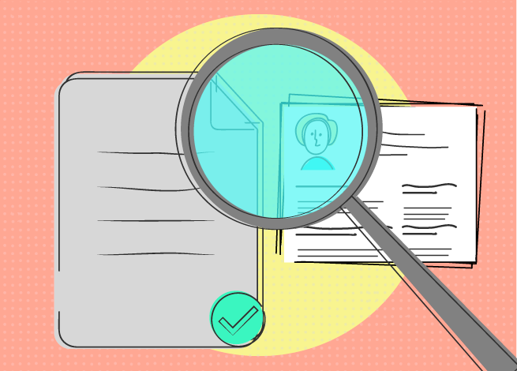

Revisiones Técnicas Formal
El RESPONSABLE DE SQA una vez que conoce los productos que se van a revisar formalmente, establece los grupos que van a llevar a cabo las revisiones, convocando a los participantes por adelantado, e informando del objetivo de la revisión, la agenda y las responsabilidades que tendrán asignadas en la revisión. La revisión se centra en una parte específica (y pequeña) del software total.
Antes de la revisión el RESPONSABLE DE SQA debe:
- Convocar a la reunión a los involucrados.
- Informar en la convocatoria el material que ellos deben preparar por adelantado.
- La reunión de revisión no puede ser mayor a 2 horas.
- Estudiar el producto a ser revisado, anotando las preguntas y dudas que le surgen para hacer en la reunión.
Durante la reunión:
- Se comienza con la explicación de la/s personas que hicieron el producto, explicando como se llegó a ese producto..
- Se concluye determinando las áreas de problema y elaborando un informe de revisión formal que incluye las acciones correctivas.
- En la reunión se deben seguir las siguientes directrices:
- Revisar el producto, no al productor.
- Fijar una agenda y mantenerla.
- Limitar el debate y las impugnaciones.
- Enunciar áreas de problema, pero no intentar resolver los problemas. Esto debe ser hecho por el que hizo el producto.
- Limitar el número de participantes de 3 a 5.
- Usar checklist para el producto a revisar.
- Deben estar agendadas en el cronograma de proyecto y en el Plan de Calidad.
- Revisar las revisiones anteriores, incluso para encontrar errores en el propio proceso de revisión.
Entrada:
- Productos a revisar
- Plan de Calidad
- Informes de RTF anteriores
Salida:
- Informe de RTF